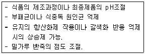
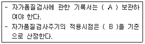
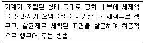
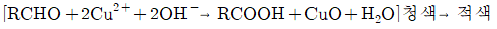

식품기사 (2018-04-28 기출문제)
1과목: 식품위생학
1. Dioxin이 인체 내에 잘 축적되는 이유는?
- 물에 잘 녹기 때문
- 지방에 잘 녹기 때문
- 주로 호흡기를 통해 흡수되기 때문
- 상온에서 극성을 가지고 있기 때문
(정답률: 85%)

2. 식품 중 단백질과 질소화합물을 함유한 식품성분이 미생물의 작용으로 분해되어 악취와 유해물질을 생성하여 식품가치를 잃어버리는 현상은?
- 발효
- 부패
- 변패
- 열화
(정답률: 87%)
3. 식품의 점도를 증가시키고 교질상의 미각을 향상시키는 고분자의 천연물질 또는 그 유도체인 식품첨가물이 아닌 것은?
- methyl cellulose
- carboxymethyl starch
- sodium alginate.
- glycerin fatty acid ester.
(정답률: 67%)
4. 식품의 원재료에는 존재하지 않으나 가공처리공정 중 유입 또는 생성되는 위해인자와 거리가 먼 것은?
- 트리코테신(trichothecene)
- 다핵방향족 탄화수소(polynuclear aromatic hydrocarbons, PAHs)
- 아크릴 아마이드(acrylamide)
- 모노클로로프로판디올(monochloropropandiol, MCPD)
(정답률: 69%)
5. 장염 비브리오균의 특징에 해당하는 것은?
- 아포를 형성한다.
- 열에 강하다.
- 감염형 식중독균으로 전형적인 급성장염을 유발한다.
- 편모가 없다.
(정답률: 77%)
6. 황색포도상구균 식중독의 특징이 아닌 것은?
- 장내독소인 enterotoxin에 의한 독소형이다.
- 잠복기가 짧은 편으로 급격히 발병한다.
- 사망률이 다른 식중독에 비해 비교적 낮다.
- 열이 39℃ 이상으로 지속된다.
(정답률: 70%)
7. 다음과 같은 목적과 기능을 하는 식품첨가물은?

- 산미료
- 조미료
- 호료
- 유화제
(정답률: 84%)
8. 몸길이 0.3~0.5mm의 유백색 또는 황백색이고 여름 장마 때에 흔히 발생하며, 곡류, 과자, 빵, 치즈 등에 잘 발생하는 진드기는?
- 설탕진드기
- 집고기진드기
- 보리먼지진드기
- 긴털가루진드기
(정답률: 66%)
9. HACCP의 7원칙에 해당하지 않는 것은?
- 위해요소분석
- 문서화, 기록유지방법 설정
- CCP 모니터링 체계 확립
- 공정흐름도 작성.
(정답률: 79%)
10. 합성수지제 식기를 60℃의 온수로 처리하여 용출시험을 시행하여 아세틸 아세톤 시약에 의해 진한 황색을 나타내었을 경우, 이 시험 용액에는 다음 중 어느 화합물의 존재가 추정 되는가?
- 포름알데히드
- 메탄올
- 페놀
- 착색료
(정답률: 84%)
11. 다음 중 채소류를 매개로 하여 감염될 수 있는 가능성이 가장 낮은 기생충은?
- 동양모양선충
- 구충
- 선모충
- 편충
(정답률: 74%)
12. 식품위생법규에 따른 자가품질검사 기준에 관하여, A와 B에 들어갈 내용이 모두 옳은 것은?

- A: 1년간, B: 제품판매일
- A: 2년간, B: 제품판매일
- A: 1년간, B: 제품제조일
- A: 2년간, B: 제품제조일
(정답률: 80%)
13. 기존의 유리병에 비해 무게가 가볍고, 인쇄가 잘 되며 녹는점이 높아, 탄산음료 용기, 레토르트 파우치에 사용되는 것은?
- PET
- PVC
- PVDC
- EPS
(정답률: 70%)
14. 피부, 장, 폐가 감염부위가 될 수 있으며, 사람이 감염되는 것은 대부분 피부다. 또한, 포자를 흡입하여 감염되면 급성기관지 폐렴증세를 나타내고, 패혈증으로 사망할 수도 있는 인수공통감염병은?
- 탄저
- 결핵
- 브루셀라증
- 리스테리아증
(정답률: 62%)
15. 감염병으로 죽은 돼지를 삶아 먹었음에도 불구하고 사망자가 발생하였다면 다음 중 어느 균에 의한 발병일 가능성이 가장 높은가?
- 결핵균
- 탄저균
- Pasteurella tularensis
- Brucella 속
(정답률: 62%)
16. 식품첨가물의 사용에 있어 옳지 않은 것은?
- 식품의 성질, 식품첨가물의 효과, 성질을 잘 연구하여 가장 적합한 첨가물을 선정한다.
- 식품첨가물은 식품제조·가공과정 중 결함 있는 원재료나 비위생적인 제조방법을 은폐하기 위하여 사용되어서는 아니 된다.
- 식품첨가물은 별도로 잘 정돈하여 보관하되, 각각 알맞은 조건에 유의하여 보관하여야 한다.
- 식품첨가물은 식품학적 안정성이 보장되므로 충분한 양을 사용해야 한다.
(정답률: 92%)
17. 식품의 생산 및 가공 처리 시 사용하는 기계 및 기구의 세척 시 세제 선택에 고려해야할 주요 사항이 아닌 것은?
- 제거해야 할 찌꺼기의 성질.
- 세척면과 세제와의 접촉시간.
- 세척수의 성질
- 세척수의 수압
(정답률: 80%)
18. 다음과 같은 식품 기계장치의 세정 방법은?

- 분해 세정법
- CIP법
- HACCP법
- Clean room법
(정답률: 80%)
19. 기생충 질환과 중간 숙주의 연결이 잘못된 것은?
- 유구조충 - 돼지
- 무구조충 - 양서류
- 회충 - 채소
- 간흡충 - 민물고기
(정답률: 88%)
20. 식품위생 분야 종사자의 건강진단 규칙에 의거한 건강진단 항목이 아닌 것은?
- 장티푸스(식품위생 관련 영업 및 집단급식소 종사자만 해당한다.)
- 폐결핵
- 전염성 피부질환(한센병 등 세균성 피부 질환을 말한다.)
- 갑상선 검사
(정답률: 92%)
2과목: 식품화학
21. Ascorbic aicd (Vitamin C)는 대표적인 레덕톤류 (reductones)로 취급된다. 그 이유는 그 구조 중 어떤 기능기가 있기 때문인가?
- 엔다이올(enediol)
- 티올-엔올(thiol-enol)
- 엔아미놀(enaminol)
- 엔다이아민(endiamine)
(정답률: 66%)
22. alkaloid, humulone, naringin의 공통적인 맛은?
- 단맛
- 떫은 맛
- 알칼리 맛
- 쓴맛
(정답률: 77%)
23. 대두 단백질 중 단백질 분해효소인 trypsin의 작용을 억제하여 단백질의 소화 흡수를 어렵게 하는 것은?
- albumin
- amylose
- lactose
- prolamin
(정답률: 69%)
24. 꽃이나 과일의 청색, 정색, 자색 등의 수용성 색소를 총칭하는 것은?
- chlorophyll
- carotenoid.
- anthoxanthin
- anthocyanin
(정답률: 71%)
25. 식품의 회분 분석에서 검체의 전처리가 필요 없는 것은?
- 액상식품
- 당류
- 곡류
- 유지류
(정답률: 75%)
26. 글루테린(glutelin)에 해당하지 않는 단백질은?(문제 오류로 실제 시험에서는 3. 4번이 정답처리 되었습니다. 여기서는 3번을 누르면 정답 처리 됩니다.)
- oryzenin.
- glutenin.
- hordein.
- zein.
(정답률: 67%)
27. 강한 빛을 비추었을 때 colloid 입자가 가시광선을 산란시켜 빛의 통로가 보이는 교질 용액의 성질은?
- 반투성
- 브라운 운동
- Tyndall 현상.
- 흡착
(정답률: 64%)
28. 관능검사의 차이식별검사 방법을 크게 종합적차이검사와 특성차이검사로 나눌 때 종합적 차이검사에 해당하는 것은?
- 삼점검사
- 다중비교검사
- 순위법
- 평점법
(정답률: 77%)
29. 청색값(blue value)이 8인 아밀로펙틴에 β-amylose를 반응시키면 청색값의 변화는?
- 낮아진다.
- 높아진다.
- 순간적으로 낮아졌다가 시간이 지나면 다시 8로 돌아간다.
- 순간적으로 높아졌다가 시간이 지나면 다시 8로 돌아간다.
(정답률: 66%)
30. 유지의 물리적 성질로 틀린 것은?
- 유지의 비중은 물보다 가볍다.
- 유지는 구성 지방산의 종류에 따라 녹는점이 달라진다.
- 유지를 가열할 때 유지 표면에서 푸른 연기가 발생할 때의 온도를 발연점이라 한다.
- 불꽃에 의하여 불이 붙는 가장 낮은 온도를 연소점이라 한다.
(정답률: 71%)
31. 조직감(texture)의 특성에 대한 설명으로 틀린 것은?
- 견고성(경도)은 일정 변형을 일으키는데 필요한 힘의 크기다.
- 응집성을 물질이 부서지는데 드는 힘이다.
- 점성은 흐름에 대한 저항의 크기다.
- 점착성은 식품 표면이 다른 물질의 표면에 부착되어 있는 것을 떼어내는 데 필요한 힘이다.
(정답률: 79%)
32. 알칼리에서 비타민 B2의 광분해 시 생기는 물질은?
- 루미플라빈(lumiflavin)
- 루미크롬(lumichrome)
- 리비톨(ribitol)
- 이소알록사진(isoalloxazine)
(정답률: 79%)
33. 30%의 수분과 30%의 설탕(C12H22O11)을 함유하고 있는 식품의 수분활성도는?
- 0.98
- 0.95
- 0.82
- 0.90
(정답률: 54%)
34. 식품 중 결합수(bound water)에 대한 설명으로 틀린 것은?
- 미생물의 번식에 이용할 수 없다.
- 100℃ 이상에서 가열하여도 제거되지 않는다.
- 0℃에서 얼지 않는다.
- 식품의 유용 성분을 녹이는 용매의 구실을 한다.
(정답률: 80%)
35. 어류가 변질되면서 생성되는 불쾌취를 유발하는 물질이 아닌 것은?
- 트리메틸아민(trimethylamine)
- 카다베린(cadaverine)
- 피페리딘(piperidine)
- 옥사졸린(oxazoline)
(정답률: 63%)
36. 점탄성(viscoelasticity)에 대한 설명으로 옳은 것은?
- Weissenberg효과란 식품이 막대기 혹은 긴 끈 모양으로 늘어나는 성질을 말한다.
- 예사성이란 청국장처럼 젓가락을 넣어 강하게 교반한 후 당겨올리면 실처럼 따라 올라가는 성질을 말한다.
- 신장성을 측정하는 기기는 farinograph이다.
- 경점성을 측정하는 기기는 extensograph이다.
(정답률: 66%)
37. 포르피린 링(porphyrin ring) 구조 안에 Mg2+을 함유하고 있는 색소 성분은?
- 미오글로빈
- 헤모글로빈
- 클로로필
- 헤모시아닌
(정답률: 64%)
38. 쌀을 도정함에 따라 비율이 높아지는 성분은?
- 오리제닌(oryzenin)
- 전분
- 티아민(thiamin)
- 칼슘
(정답률: 82%)
39. 다음 중 비뉴톤(Non-Newton) 유체의 성질을 가장 잘 나타내는 것은?
- 물
- 포도당용액
- 전분용액
- 소금용액
(정답률: 75%)
40. 유지 산패의 측정 방법이 아닌 것은?
- 과산화물값
- TBA 값
- 비누화값
- 총 carbonyl 화합물 측정.
(정답률: 71%)
3과목: 식품가공학
41. 전분에서 fructose를 제조할 때 사용되는 효소는?
- pectinase
- cellulase
- α-amylase
- protease
(정답률: 71%)
42. 통조림 내에서 가장 늦게 가열되는 부분으로, 가열살균 공정에서 오염미생물이 확실히 살균되었는가를 평가하는데 이용되는 것은?
- 온점
- 냉점
- 열점
- 중앙점
(정답률: 76%)
43. 주로 대두유 추출에 사용되며, 원료 중의 유지함량이 비교적 적거나, 1차 착유 후 남은 소량의 유지까지 착유하기 위한 2차적인 방법으로 유지회수율이 매우 높은 착유방법은?
- 용매추출법(solvent extraction)
- 습식용출법(wet rendering)
- 건식용출법(dry rendering)
- 압착법(pressing)
(정답률: 74%)
44. 수분활성도에 대한 설명으로 틀린 것은?
- 수분활성도는 식품의 수증기압과 공기의 수증기압과의 비율로 표현된다.
- 식품의 수분활성도는 식품의 수분함량, 식품 온도의 영향을 받는다.
- 식품의 비효소적 갈변반응, 지방질 산화반응의 속도는 식품의 수분활성도와 직접적인 관계가 있다.
- 미생물의 생장에 필요한 최저 수분활성도는 곰팡이가 세균보다 낮다.
(정답률: 54%)
45. 염장에 영향을 미치는 요인에 대한 설명으로 틀린 것은?
- 식염의 삼투속도는 식염의 온도가 높을수록 크다.
- 식염의 농도가 높을수록 삼투압은 커진다.
- 순수한 식염의 삼투속도가 크다.
- 지방 함량이 많은 어체에서는 식염의 침투속도가 빠르다.
(정답률: 69%)
46. 탄력성과 보수성이 좋은 두부를 높은 수율로 얻을 수 있으며, 불용성(난용성)으로 가장 많이 사용하는 두부 응고제는?
- 염화마그네슘
- 염화칼슘
- 황산칼슘
- 염화암모늄
(정답률: 56%)
47. 쌀의 도정도를 결정하는 방법으로 적절하지 않은 것은?
- 수분함량 변화에 의한 방법
- 색(염색법)에 의한 방법
- 생성된 쌀겨량에 의한 방법
- 도정시간과 횟수에 의한 방법.
(정답률: 58%)
48. 수지 때문에 육가공품의 훈연재로 적합하지 않은 것은?
- 떡갈나무
- 참나무
- 소나무
- 오리나무
(정답률: 75%)
49. 일반적으로 사후 경직 시간이 가장 짧은 육류는?
- 닭고기
- 쇠고기
- 양고기
- 돼지고기
(정답률: 83%)
50. 포도주 제조 공정 중 주발효가 끝난 후에 이어서 하는 다음 공정은? (문제 오류로 실제 시험에서는 1, 2, 3번이 정답처리 되었습니다. 여기서는 임의로 1번을 누르면 정답 처리 됩니다.)
- 후발효
- 압착 및 여과
- 침전
- 저장
(정답률: 69%)
51. 우유의 당에 해당하는 것은?
- sucrose
- maltose
- lactose
- gentiobiose
(정답률: 85%)
52. 유제품과 가공에 적용되는 원리가 옳은 것은?
- 치즈 – 응유효소에 의한 응고
- 요구르트 – 알코올에 의한 응고
- 아이스크림 – 염류에 의한 응고
- 버터 – 가열에 의한 응고
(정답률: 82%)
53. 무균포장에 대한 설명으로 옳지 않은 것은?
- 무균포장제품은 멸균되었기 때문에 열에 불안정한 식품에서 일어나기 쉬운 품질변화를 최소화할 수 있다.
- 연속공정생산이 어렵고 대형포장제품을 만들 수 없다.
- 냉장할 필요 없이 상온에서 장기간 보존이 가능하다.
- 멸균용기에 포장하므로 내열성 포장이 필요 없고 플라스틱이나 종이를 소재로 한 복합재질을 포장 용기로 사용할 수 있다.
(정답률: 58%)
54. 액란(liquid egg)을 건조하기 전, 당을 제거하는 이유가 아닌 것은?
- 난분의 용해도 감소 방지
- 변색 방지
- 난분의 유동성 저하 방지
- 이취의 생성 방지
(정답률: 57%)
55. 6×104개의 포자가 존재하는 통조림을 100℃에서 45분 살균하여 3개의 포자가 살아남았다면 100℃에서 D값은?
- 5.46분
- 10.46분
- 15.46분
- 20.46분
(정답률: 52%)
56. 유지를 가공하여 경화유를 만들 때 촉매제로 사용되는 것은?
- 질소
- 수소
- 니켈
- 헬륨
(정답률: 74%)
57. 콩으로부터 분리대두단백(soy protein isolate)을 가공하기 위한 일반적인 제조 공정이 아닌 것은?
- 탈지
- 가수분해
- 불용성 물질 분리
- 단백질 침전 및 원심 분리.
(정답률: 60%)
58. 습량기준으로 수분함량이 80%인 경우 건량기준의 수분함량은?
- 567%
- 400%
- 233%
- 100%
(정답률: 64%)
59. 심온 냉동장치(cryogenic freezer)에서 사용되는 냉매가 아닌 것은?
- 드라이아이스
- 액화질소
- 프레온-12
- 이산화황가스
(정답률: 71%)
60. 다음 중 압출 성형법으로 제조되는 것은?
- 국수
- 껌
- 젤리
- 마카로니
(정답률: 69%)
4과목: 식품미생물학
61. 미생물의 일반적인 생육곡선에서 정상기(정지기,stationary phase)에 대한 설명으로 틀린 것은?
- 균수의 증가와 감소가 거의 같게 되어 균수가 더 이상 증가하지 않게 된다.
- 전 배양기간을 통하여 최대의 균수를 나타낸다.
- 세포가 왕성하게 증식하며 생리적 활성이 가장 높다.
- 내생포자를 형성하는 세균은 보통 이 시기에 포자를 형성한다.
(정답률: 73%)
62. 캠필로박터 제주니를 현미경으로 검경 시 확인되는 모습은?
- 나선형모양
- 포도송이모양
- 대나무 마디모양
- V자 형태로 쌍을 이룬 모양
(정답률: 67%)
63. 맥주산업에 이용되는 상면발효 효모는?
- Saccharomyces cerevisiae
- Zygosaccharomyces rouxii
- Saccharomyces carlsbergensis
- Saccharomyces fragilis
(정답률: 78%)
64. Gram 염색에 사용되지 않는 것은?
- Lugol 용액
- Safranin
- Methyl red
- crystal violet.
(정답률: 64%)
65. 유기물을 분해하여 호흡 또는 발효에 의해 생기는 에너지를 이용하여 생육하는 균은?
- 광합성균
- 화학합성균
- 독립영양균
- 종속영양균
(정답률: 68%)
66. 60분마다 분열하는 세균의 최초 세균수가 5개일 때, 3시간 후의 세균수는?
- 40개
- 90개
- 120개
- 240개
(정답률: 73%)
67. 배양효모와 야생효모의 비교에 대한 설명 중 옳은 것은?
- 배양효모는 장형이 많으며 세대가 지나면 형태가 축소된다.
- 야생효모는 번식기에 아족을 형성하며 액포가 작고 원형질이 흐려진다.
- 배양효모는 발육온도가 높고 저온, 건조, 산에 대한 저항성이 약하다.
- 야생효모의 세포막은 점조성이 풍부하여 세포가 쉽게 액내로 흩어지지 않는다.
(정답률: 58%)
68. 홍조류에 대한 설명 중 틀린 것은?
- 클로로필 이외에 피코빌린이라는 색소를 갖고 있다.
- 한천을 추출하는 원료가 된다.
- 세포벽은 주로 셀룰로오스와 펙틴으로 구성되어 있으며, 길이가 다른 2개의 편모를 갖고있다.
- 엽록체를 갖고 있어 광합성을 하는 독립영양생물이다.
(정답률: 55%)
69. Rhizopus 속의 특징으로 틀린 것은?
- 포자낭은 구형이다.
- 포자낭병이 가근의 기부로부터 발생하지 않고 가근과 가근의 중간에서 발생한다.
- 포복지가 계속하여 생기므로 Mucor 속보다 번식력이 왕성하다.
- 무성생식에 의해 포자낭포자를 형성한다.
(정답률: 50%)
70. 곰팡이의 유성포자가 아닌 것은?
- 포자낭포자
- 담자포자
- 자낭포자
- 접합포자
(정답률: 65%)
71. 미생물의 명명법에 관한 설명 중 틀린 것은?
- 종명은 라틴어의 실명사로 쓰고 대문자로 시작한다.
- 학명은 속명과 종명을 조합한 2명법을 사용한다.
- 세균과 방선균은 국제세균명명규약에 따른다.
- 속명 및 종명은 이탤릭체로 표기한다.
(정답률: 62%)
72. Escherichia coli와 Enterobacter aerogene의 공통적인 특징은?
- Indole 생성여부
- Acetoin 생성여부
- 단일 탄소원으로 구연산염의 이용성
- 그람염색 결과
(정답률: 69%)
73. 통조림의 flat sour에 대한 설명으로 틀린 것은?
- 관의 형태는 정상이지만 내용물은 젖산 생성 때문에 신맛이 생성된다.
- 채소나 수산물 통조림 등 산도가 낮은 식품에서 주로 발생한다.
- 유포자 내열성 세균에 의한 경우가 많다.
- 과도한 탄산가스 생성이 수반된다.
(정답률: 63%)
74. 돌연변이에 대한 설명으로 틀린 것은?
- DNA 분자 내의 염기서열을 변화시킨다.
- DNA에 변화가 있더라도 표현형이 바뀌지 않는 잠재성 돌연변이(silent mutation)가 있다.
- 모든 변이는 세포에 있어서 해로운 것이다.
- 유전자 자체의 변화에 의해 발생하기도 한다.
(정답률: 83%)
75. 박테리오파지(Bacteriophage)의 설명 중 틀린 것은?
- 숙주(宿主)로 되는 균이 한정되어 있지 않다.
- 기생증식하면서 용균(溶菌)하는 Virus체다.
- 머리는 주로 DNA, 꼬리는 단백질로 구성되어 있다.
- 독성(virulent)파지와 용원(temperate)파지로 대별한다.
(정답률: 65%)
76. 조상균류에 속하는 것은?
- Aspergillus oryzae
- Mucor rouxii
- Saccharomyces cerevisiae.
- Lactobacillus casei.
(정답률: 63%)
77. 천자배양(stab culture)에 가장 적합한 것은?
- 호염성균의 배양
- 호열성균의 배양
- 호기성균의 배양
- 혐기성균의 배양
(정답률: 64%)
78. 클로렐라에 관한 설명 중 틀린 것은?
- 건조물은 약 50%가 단백질이고 아미노산과 비타민이 풍부하다.
- 단세포 갈조류이다.
- 빛이 존재할 때 간단한 무기염과 CO2의 공급으로 쉽게 증식한다.
- 세포의 지름은 대략 2~12μm이다.
(정답률: 74%)
79. 세균의 유전자 재조합 방법이 아닌 것은?
- 접합(conjugation)
- 조직배양(tissue culture)
- 형질도입(transduction)
- 형질전환(transformation)
(정답률: 71%)
80. 산화력이 강하며 배양액의 표면에서 피막을 형성하는 산막 효모(피막효모, flim yeast)에 속하는 것은?
- Candida 속
- Pichia 속
- Saccharomyce 속
- Schizosaccharomyces 속
(정답률: 64%)
5과목: 생화학 및 발효학
81. RNA의 뉴클레오티드 사이의 결합을 가수분해하는 효소는?
- Ribonuclease
- Polymerase
- Deoxyribonuclease
- Ribonucleotidyl transferase
(정답률: 64%)
82. 사람의 체내에서 진행되는 핵산의 분해대사과정에 대한 설명으로 틀린 것은?
- 퓨린 계열 뉴클레오다이트 분해는 오탄당(pentose)을 떼어내는 반응으로부터 시작된다.
- 퓨린과 피리미딘은 분해되어 각각 요산과 요소를 생산한다.
- 생성된 요산의 배설이 원활하지 못하면, 체내에 축적되어 통풍의 원인이 된다.
- 퓨린 및 피리미딘 염기는 회수경로를 통해 핵산 합성에 재이용된다.
(정답률: 53%)
83. 제빵효모 생산을 위해 사용되는 균주의 특성이 아닌 것은?
- 물에 잘 분산될 것
- 단백질 함량이 높을 것
- 발효력이 강력할 것
- 증식속도가 빠를 것
(정답률: 68%)
84. 맥주의 주발효가 끝나면 후발효와 숙성을 시킨 다음 여과하여 일정 기간 후숙을 시킨다. 이 때, 낮은 온도에 보관하여 후숙을 하면 현탁물이 생기는 이유는?
- 효모의 invertase가 남아 있어서.
- CO2의 발생으로 기포가 생성되어서.
- 발효되지 못한 지방산(fatty acid)이 남아 있어서.
- 분해물 중 펩티드(peptide)와 호프의 수지 및 탄닌 성분들이 집합체(flocculation or colloid)를 형성하기 때문에.
(정답률: 74%)
85. 식품 중의 병원성 인자 및 병원 미생물을 검출할 때 RNA를 이용해서 검출하는 방법은?
- ELISA method
- RT-PCR method
- Southern blot
- Western blot
(정답률: 76%)
86. 요소회로(Urea cycle)를 형성하는 물질이 아닌 것은?
- ornithine
- citulline
- arginie
- glutamic acid
(정답률: 70%)
87. 생체 내의 지질 대사 과정에 대한 설명으로 옳은 것은?
- 인슐린은 지질 합성을 저해한다.
- 인체에서는 탄소수 10개 이하의 지방산만을 생성한다.
- 지방산이 산화되기 위해서는 phyridoxal phosphate의 도움이 필요하다.
- 팔미트산(palmitic acid,C16:0)의 생합성을 위해서는 8분자의 아세틸 CoA가 필요하다.
(정답률: 59%)
88. 당밀 원료로 주정을 제조할 때의 발효법인 Hildebrandt-Erb법(two-stage method)의 특징이 아닌것은?
- 효모증식에 소모되는 당의 양을 줄인다.
- 폐액의 BOD를 저하시킨다.
- 효모의 회수비용이 절약된다.
- 주정농도가 가장 높은 술덧을 얻을 수 있다.
(정답률: 57%)
89. 다른자리입체성 조절효소(allosteric enzyme)에 관한 설명으로 틀린 것은?
- 활성자리와 조절자리가 구별된다.
- 반응속도가 Michaelis-Menten식을 따른다.
- 촉진적 효과인자(positive effector)에 의해 활성화 된다.
- 반응속도의 S자형 곡선은 소단위(subunit)의 협동에 의한 것이다.
(정답률: 46%)
90. 포도당을 영양원으로 젖산(lactic acid)을 생산할 수 없는 균주는?
- Pediococcus lindneri
- Leuconostoc mesenteroides
- Rhizopus oryzae
- Aspergillus niger
(정답률: 48%)
91. 효모가 생산하는 invertase의 작용 기전에 따른 분류 시 또 다른 명칭으로 옳은 것은?
- Glucoamylase
- β-Fructosidase
- Sucrose
- β-Glucosidase
(정답률: 42%)
92. 주정공업에서 이용되는 아밀로(Amylo)법의 장점으로 틀린 것은?
- 코지(koji)를 만드는 설비와 노력이 필요없다.
- 밀폐발효이므로 발효율이 높다.
- 대량사업이 편리하여 공업화에 용이하다.
- 당화에 소요되는 시간이 짧다.
(정답률: 44%)
93. 산소에 전자가 전달되어 생성된 O2-이온의 detoxification에 관여하는 효소가 아닌 것은?
- superoxide dismutase
- Reductase
- Catalase
- Peroxidase
(정답률: 41%)
94. 수용성 비타민으로 분류되는 것은?
- 비타민 B
- 비타민 E
- 비타민 A
- 비타민 K
(정답률: 80%)
95. 괴혈병 치료 등의 생리적인 특성을 갖고 있고 생물체 내에서 환원제(reducing agent)로 작용하는 비타민은?
- Vitamin D
- Vitamin K
- Cobalami
- Ascorbic acid
(정답률: 67%)
96. 사람의 간(liver)에서 일어나지 않는 반응은?
- 지방산에서 케톤체(ketone body)의 생성
- 지방산에서 글루코오스의 생성
- 아미노산에서 글루코오스의 합성
- 암모니아로부터 요소(urea)의 생성
(정답률: 44%)
97. 반응과정과 관계있는 물질은?

- 필수지방산
- 환원당
- 필수아미노산
- 비환원당
(정답률: 62%)
98. 단백질을 구성하는데 쓰이는 표준아미노산 분자들의 특성에 대한 설명으로 틀린 것은?
- 모든 표준아미노산은 산, 염기 성질을 동시에 지니고 있다.
- 모든 표준아미노산은 부제탄소(chiral carbon)를 갖고 있다.
- 표준아미노산이 갖고 있는 곁사슬의 화학적 구조에 따라 용해도가 다르다.
- 모든 표준아미노산은 펩타이드 결합 능력을 가지고 있다.
(정답률: 67%)
99. DNA로부터 단백질 합성까지의 과정에서 t-RAN의 역할에 대한 설명으로 옳은 것은?
- m-RNA 주형에 따라 아미노산을 순서대로 결합시키기 위해 아미노산을 운반하는 역할을 한다.
- 핵 안에 존재하는 DNA정보를 읽어 세포질로 나오는 역할을 한다.
- 아미노산을 연결하여 protein을 직접 합성하는 장소를 제공한다.
- 합성된 protein을 수식하는 기능을 담당한다.
(정답률: 75%)
100. Glucose를 기질로 해서 빵효모를 생산할 때, 균체 생산수율은 0.5이다. Glucose 100g/L를 완전히 소모하였을 때 생산된 균체의 량은?
- 35g/L
- 45g/L
- 50g/L
- 60g/L
(정답률: 68%)